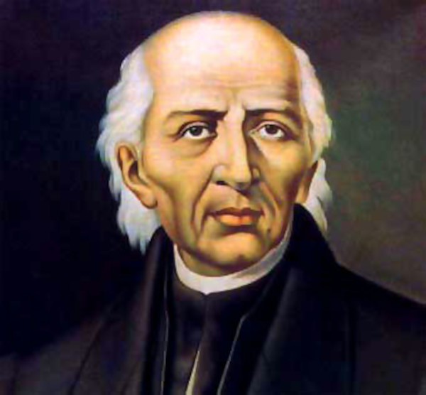
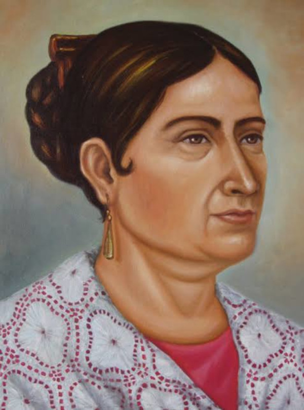
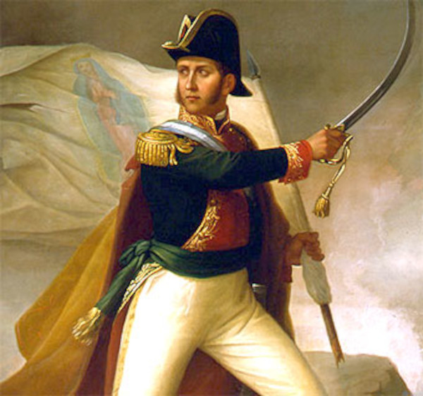
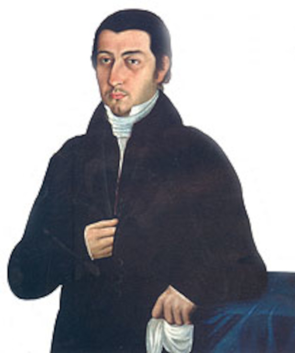
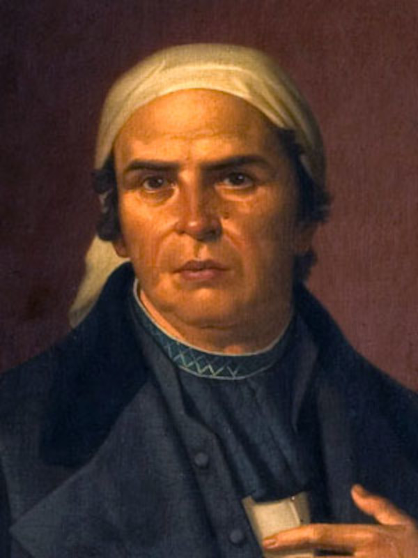
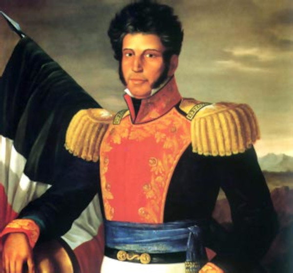
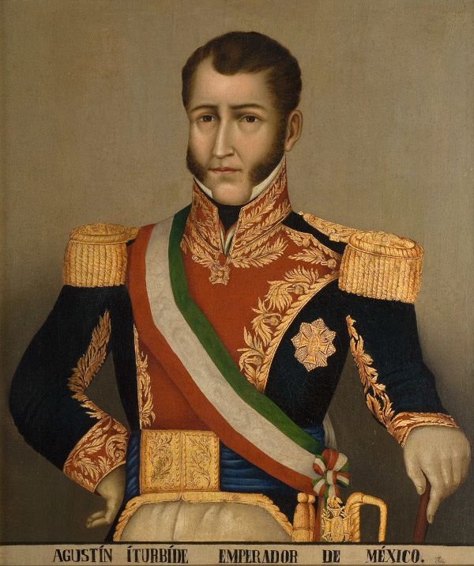

Personas Ilustres de la Independencia
Miguel Hidalgo y Costilla
Sacerdote conocido como el "Padre de la Patria". En la madrugada del 16 de septiembre de 1810 encabezó el Grito de Dolores, convocando al pueblo a levantarse contra el dominio español y dando inicio formal al movimiento de Independencia.

Josefa Ortiz de Domínguez
Conocida como "La Corregidora", fue figura fundamental en la Conspiración de Querétaro. Al ser descubiertos los planes revolucionarios, logró avisar oportunamente a los líderes insurgentes en San Miguel el Grande y Dolores, lo que precipitó el inicio de la lucha armada.

Ignacio Allende
Capitán e ideólogo militar del movimiento insurgente. Junto con Miguel Hidalgo, lideró las primeras victorias independentistas en el Bajío; destacó por su formación táctica, disciplina militar y visión organizativa hasta su captura y fusilamiento en 1811.

Juan Aldama
Capitán del regimiento de caballería que participó activamente en las reuniones secretas de Querétaro. Al recibir el aviso de La Corregidora, viajó a Dolores para alertar a Hidalgo y Allende, combatiendo como uno de los principales jefes insurgentes de la primera etapa.

José María Morelos y Pavón
Sacerdote y brillante estratega militar apodado el "Siervo de la Nación". Continuó la lucha tras la muerte de Hidalgo, dominando el sur del país, convocando al Congreso de Anáhuac y redactando los Sentimientos de la Nación, documento base del constitucionalismo mexicano.

Vicente Guerrero
General insurgente que mantuvo viva la llama de la resistencia armada en las montañas del sur durante la etapa más difícil del conflicto. Pactó el Abrazo de Acatempan con Iturbide para unificar fuerzas y lograr la consumación de la Independencia en 1821.

Agustín de Iturbide
Militar del ejército realista que posteriormente pactó la paz con los insurgentes mediante el Plan de Iguala (1821). Lideró la entrada del Ejército Trigarante a la Ciudad de México el 27 de septiembre, consumando la Independencia y convirtiéndose en el primer Emperador de México.
